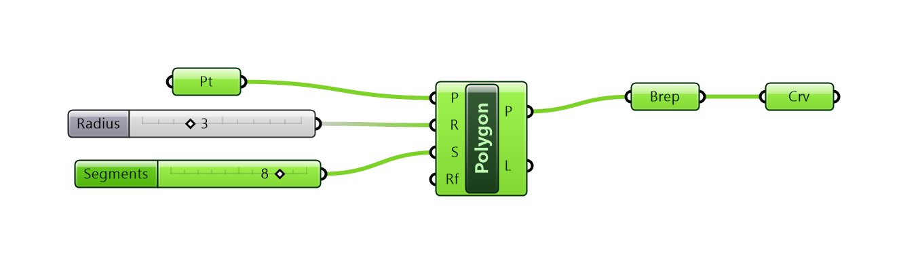
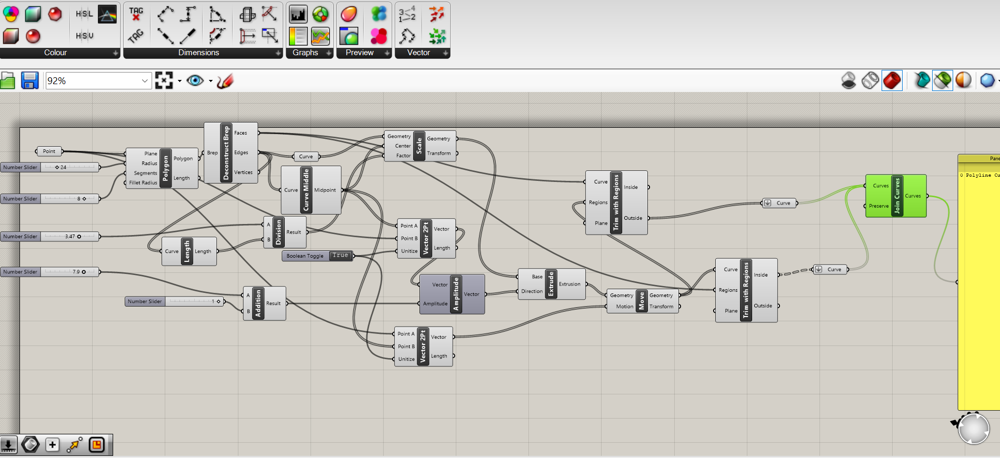
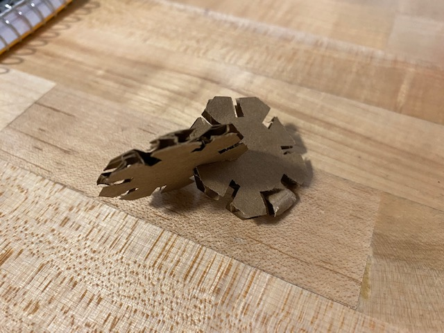

Courtenay's Assignment 2!

My goals for this project were to create a parametric model using a grasshopper definition, then using the model, design a shape to be baked in Rhino and laser cut in 30 parts on cardboard that could be clipped together. The grasshopper definition needed to allow for varying thickness of cardboard.
Being unfamiliar with Grasshopper and still very new to Rhino, I watched a tutorial given by our terrific teaching assistant, Junchao, on how to model parametric objects. Following along in the tutorial, and with a bit a luck and perseverance, I was finally able to define this base pologon shape, then extrude it properly and bake it in Rhino before laser printing!
Here are some shots of the early stage of my Grasshopper definition work-in-progress:


Grasshopper file (a snaphoot in time!)
Rhino 7 file (my learning in progress!)
After finishing the tutorial, I documented a couple more shots of my final Grasshopper definition and Rhino model:


I went to the makerspace to laser cut my parametric shape and do some testing. Before cutting, I measured the depth of my cardboard, which measured 3.5 mm. Next, I had to convert my Rhino file (.3dm) to Adobe Illustrator (.ai), reduce the stroke weight to .01 pt, and change the color to RGB (255, 0, 0) so that the laser printer would recognize it.
When testing the fit of my first pair of laser cut parts, I found the clipping together to be a bit clunky. The laser power setting appeared to be set too low because the edges of the first two cardboard prototypes were a bit ragged.

In the lab, the tech who was assisting me with my project suggested that we increase the power setting on the laser. With that minor power adjustment, I re-cut and re-tested my shapes, looking for smoother edges and a better fit. Success! This version turned out perfectly!
Final measurements: In my final Rhino model, the width of the poloygon's notches measured 3.5 mm, and their depth measured X. Success at last!
Rhino 7 file (final version
Adobe Illustrator file (final version)
Laser settings:
As a last step, I clipped together my 30 laser cut, symmetrical polygon parts into this new, asymmetrical form, et voila! A new piece of abstract art!
Big thanks to the makerspace lab tech, Jimmy, who helped me to successfullly troubleshoot my ragged edges on the first round of laser cutting and isolate the laser power issue!